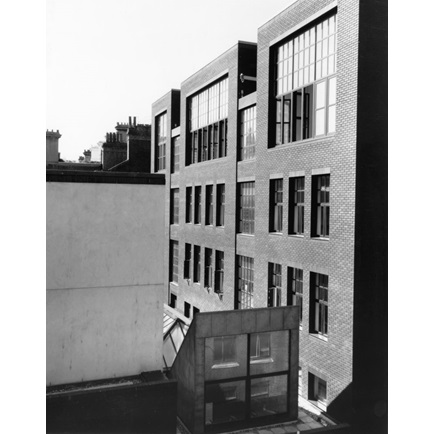
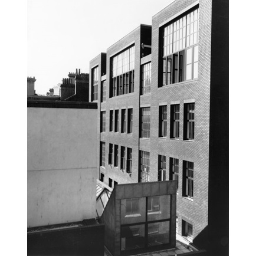

The Royal College of Art
The V&A/RCA History of Design programme is internationally recognised as the leading centre for the postgraduate study of the history of design and material culture. As jointly offered by two world-leading centres for scholarship and creativity: the RCA and the Victoria and Albert Museum (V&A), we teach and research cultural, social, economic, political and technological history through artefacts and our interactions with them.
 
